Os povos asiáticos, que representam quase 60% da população mundial, são compostos de inúmeras etnias e se distribuem em dezenas de países, com grande variedade de idiomas. Locais como Hong Kong,
metrópole
chinesa, Cingapura, cidade-Estado no sudeste do continente, Bangcoc ou Phuket (imagem acima), na Tailândia, são pontos de encontro de diversas culturas. Atraídos pela beleza cênica, por negócios, comércio e emprego, milhares de pessoas
da Ásia e outros continentes se misturam em suas festivas ruas centrais.
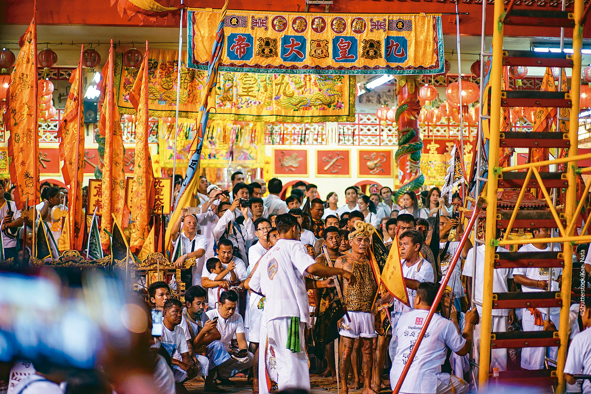
Festa popular na ilha de Phuket, Tailândia, 2016
Consulte a localização dessas cidades em mapas políticos do continente asiático para responder às seguintes questões:
O que é semelhante na localização geográfica das quatro cidades mencionadas?
De que maneira essa localização espacial contribui para o encontro de pessoas das mais diversas origens?
Há uma década, a cidade tailandesa de Phuket foi devastada em uma grande tragédia. No entanto, o espaço urbano, bem como o otimismo da população, vem se reerguendo. Qual foi o desastre que, entre outros locais, atingiu Phuket no
início deste século?
Objetivos
Analisar os contrastes socioeconômicos presentes em diferentes regiões da Ásia e relacioná-los com o contexto global.
Reconhecer a diversidade étnica, cultural e linguística do continente asiático e associá-la a espaços geográficos próprios.
O continente asiático, o maior de todos, é também o mais populoso. Dessa forma, é natural que apresente grande variedade interna, seja do ponto de vista socioeconômico e político, seja do ponto de vista cultural. O presente capítulo
privilegiará esses dois aspectos importantes na compreensão do continente: a primeira parte dedica-se aos diferentes contextos regionais onde se encontram as sociedades e as economias da Ásia; a segunda parte concentra-se nas
identidades culturais que povoam e diversificam a população do continente.
Contextos socioeconômicos e políticos na Ásia
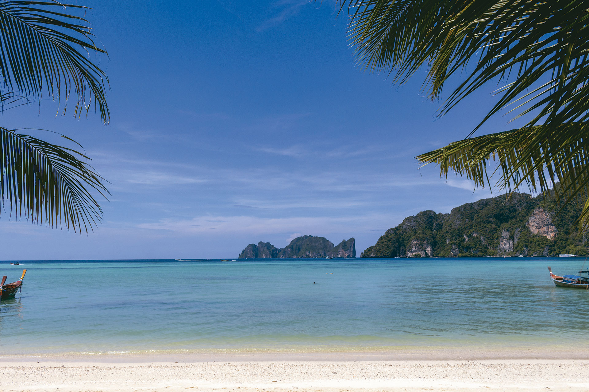
Praia na ilha de Koh Phi Phi, Tailândia, 2018
No continente asiático, são notórios os contrastes de paisagens, tanto culturais quanto naturais. Arranha-céus de arquiteturas futuristas despontam em meio às vias movimentadas de automóveis e pessoas em plenos desertos e estepes no
Catar, Mongólia ou Uzbequistão. Bancos e bolsas de valores de grandes cidades, como Xangai e Hong Kong, na China, Cingapura, cidade-Estado no sudeste do continente, e Tóquio, capital do Japão, movimentam grandes montantes de capital
financeiro diariamente.
Paraísos tropicais visitados por turistas das mais diversas partes do mundo apresentam boa infraestrutura para recebê-los aos milhares: confortáveis hotéis e pousadas, vários logradouros públicos, áreas comerciais e, principalmente,
grande variedade de praias de águas cristalinas e areias brancas. Não muito distantes dos principais centros para onde convergem os turistas, porém, os espaços geográficos são muitas vezes bem distintos em relação aos serviços públicos
e à infraestrutura. A combinação de pujança econômica e contrastes sociais se projeta nas diferentes regiões da Ásia. Conforme veremos adiante, áreas carentes de mais e melhores serviços públicos e outras bem servidas e planejadas
coexistem nas distintas regiões do continente.
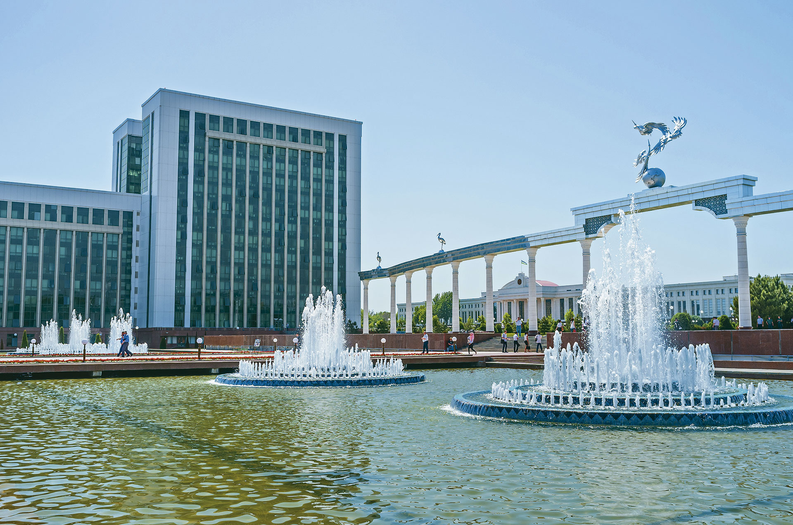
Moderna arquitetura na Praça da Independência, em Tashkent, Uzbequistão, 2015
Habitações precárias às margens do rio, em Chennai, Índia, 2018
Regiões da Ásia
O extenso continente asiático, com sua multiplicidade de paisagens, culturas e situações socioeconômicas, pode ser dividido em grandes regiões. De acordo com a regionalização realizada pela ONU, a mais usual, temos as seguintes
regiões
no continente asiático: Oeste da Ásia, Ásia Central, Ásia Setentrional, Ásia Oriental, Ásia Meridional e Sudeste Asiático.
Ásia: regiões
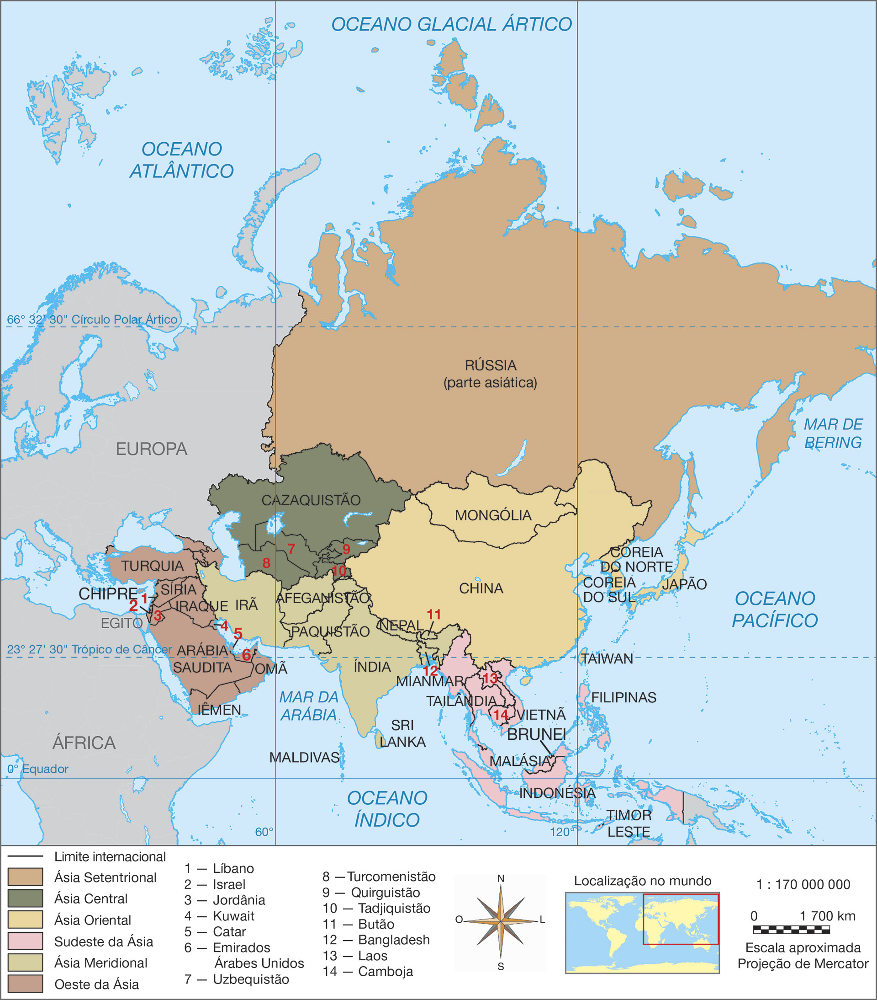
Fonte: ONU. Methodology: standard country or area codes for statistical use. Disponível em: <https://unstats.un.org/ unsd/methodology/m49/>. Acesso em: 6 fev. 2019. Adaptação.
Cartografar
Em relação ao mapa acima, leia o texto e responda às questões a seguir.
O turismo vem se firmando como uma das mais rentáveis atividades econômicas nas diversas regiões do mundo. No continente asiático, os oito países que mais receberam visitantes de outras partes do mundo e da própria Ásia, de
acordo
com
a Organização Mundial do Turismo (das Nações Unidas) em 2017, foram:
1º.) China (60,7 milhões);
2º.) Turquia (37,6 milhões);
3º.) Tailândia (35,4 milhões);
4º.) Japão (28,7 milhões);
5º.) Malásia (26,0 milhões);
6º.) Índia (15,5 milhões);
7º.) Cingapura (13,9 milhões);
8º.) Coreia do Sul (13,3 milhões).
a) Organize os países de acordo com a região da Ásia em que se situam.
b) Quais regiões do continente concentram a maior parte dos visitantes?
Ásia Setentrional
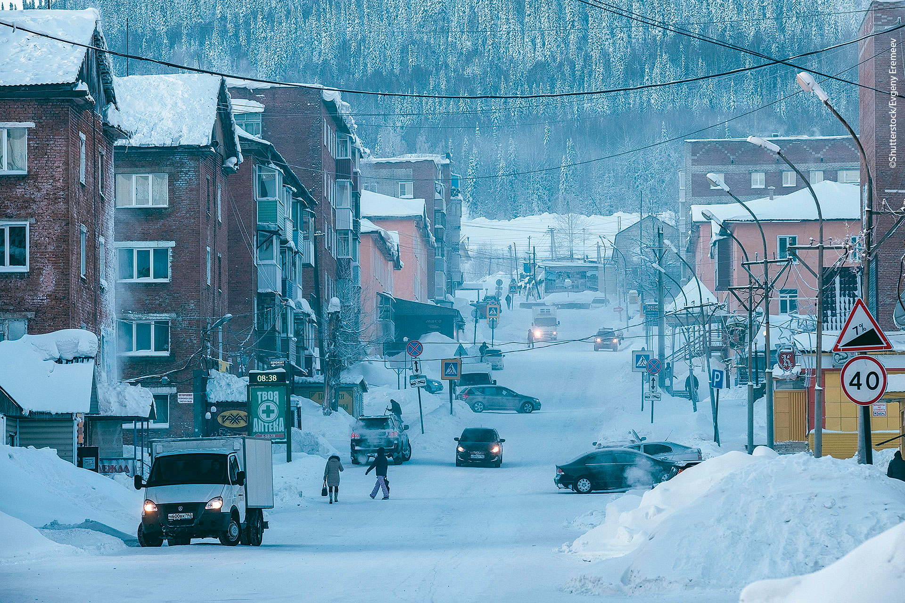
Cidade siberiana de Sheregesh, Rússia, 2018
Trata-se da região norte do continente asiático e corresponde a uma parte considerável do território russo. O domínio natural da região é a taiga, florestas frias de coníferas que passam boa parte do ano sob a neve.
Abrange paisagens peculiares e pouco povoadas, como as estepes da região fronteiriça com a China e a Mongólia, o entorno do Lago Baikal e o inóspito litoral ártico. Nesta última área, localizada no extremo norte do continente
asiático,
os verões são caracterizados por períodos cada vez mais extensos de claridade, durando vários dias seguidos; o oposto ocorre nos invernos, quando as noites se tornam cada vez mais longas, até tomarem o período de vários dias.
Ásia Central
A região central da Ásia é domínio natural de estepes e pradarias com vegetação rasteira. Abrange as ex-repúblicas soviéticas do Cazaquistão, Uzbequistão, Quirguistão, Tadjiquistão e Turcomenistão.
A expansão da fé islâmica e da cultura árabe alcançou a região e se estabeleceu entre os séculos VII e VIII. Ainda hoje, predomina nessa região o islamismo, sendo o cristianismo ortodoxo, por
influência
russa, a minoria religiosa mais comum.
Antiga mesquita de Bibi-Khanym, em Samarqand, Uzbequistão, 2018
Nesta região pouco povoada, com menos de 10 habitantes por km², o cultivo de algodão, baseado na irrigação, e a criação de gado (ovinos e caprinos) são bastante comuns. Os países da Ásia Central têm na agropecuária, ao lado da extração
de gás natural e petróleo, a base de suas economias.
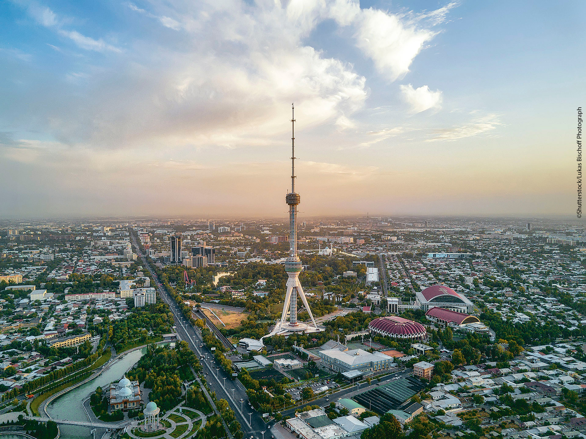
Modernos arranjos espaciais urbanos em uma cidade milenar: Tashkent, Uzbequistão, 2018
Tashkent, capital do Uzbequistão, é a mais populosa cidade da Ásia Central e conta com mais de 2 milhões de habitantes. Fundada há cerca de 2 500 anos, situa-se em meio a antigas rotas comerciais entre o Extremo Oriente e as terras
costeiras ao Mar Mediterrâneo.
Oeste da Ásia
O Oriente Médio estende-se desde a Península Arábica, às margens do Mar Vermelho, até a Cordilheira do Cáucaso, que marca a separação geográfica dos continentes, e desde a Península de Anatólia, na Turquia, ao Irã. O Oeste
Asiático,
portanto, corresponde em grande parte à região do Oriente Médio, com exceção do Irã, que faz parte da Ásia meridional. Apesar do clima predominantemente árido e de extensas áreas desérticas, o Oriente Médio abrange territórios de
muitos
povos, seja em tempos antigos, seja em tempos atuais. Não por acaso, é berço de muitas religiões, em especial as três maiores religiões monoteístas do mundo: o cristianismo, o judaísmo e o islamismo. A
coexistência de
muitas culturas e lugares sagrados é motivo de controvérsias ao longo da história, algumas das quais presentes ainda hoje, principalmente em Israel, conforme veremos mais adiante.
monoteístas: adeptos do monoteísmo, ou crença religiosa em apenas uma divindade, em oposição ao politeísmo, que crê na existência de várias divindades.
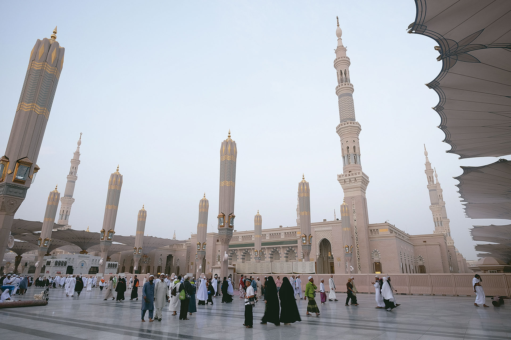
Muçulmanos na Mesquita do Profeta (Al-Masjid an-Nabawi), em Medina, Arábia Saudita, 2018
Além da confluência histórica e cultural, que faz do Oeste Asiático uma região de muitas rivalidades, a farta presença de recursos energéticos no subsolo, em especial petróleo e gás natural, contribui para gerar mais disputas e até
mesmo conflitos armados ou diplomáticos. Com uma distribuição populacional muito irregular, a região é, de modo geral, pouco povoada, por conta de seus extensos desertos. Contudo, no litoral e no planalto da Península de Anatólia, na
Turquia, no vale de rios como o Tigre e o Eufrates, na Síria, no Iraque e em grande parte do Irã há grandes adensamentos demográficos.
O Oeste da Ásia tem a maior parte de sua população habitando as cidades, muitas das quais estão entre as mais antigas aglomerações urbanas do mundo. Istambul, na Turquia, é a maior de todas, uma megacidade que em 2015 contava com
mais
de 13 milhões de habitantes. Bagdá, capital do Iraque, com mais de 6 milhões de habitantes, e Riad, capital da Arábia Saudita, com mais de 5 milhões de habitantes, também são grandes cidades do Oriente Médio.
Os contrastes ainda se revelam na desigual expectativa de vida nos países da Ásia Ocidental: enquanto a população israelense vive em média 82,3 anos, o que lhe garante o 14º. lugar no mundo nesse quesito demográfico, no Iêmen a
expectativa de vida é de apenas 65,3 anos, dado que posiciona o país em 142º. lugar no ranking de longevidade.
Istambul, Turquia, 2018
Ásia Meridional
A região da Ásia Meridional, uma das mais populosas e multiétnicas do mundo, compreende o Irã, o Afeganistão e o subcontinente indiano. Este último abrange as ex-colônias britânicas: Índia, Paquistão, Bangladesh e Sri Lanka,
situada
na
ilha de Ceilão. Conforme vimos no capítulo 4, nesses países há forte atuação sazonal das massas de ar, carregadas de umidade no verão e secas no inverno, ocasionando o fenômeno das chuvas de monções. Por essa razão, também pode
ser
denominada Ásia Monçônica.
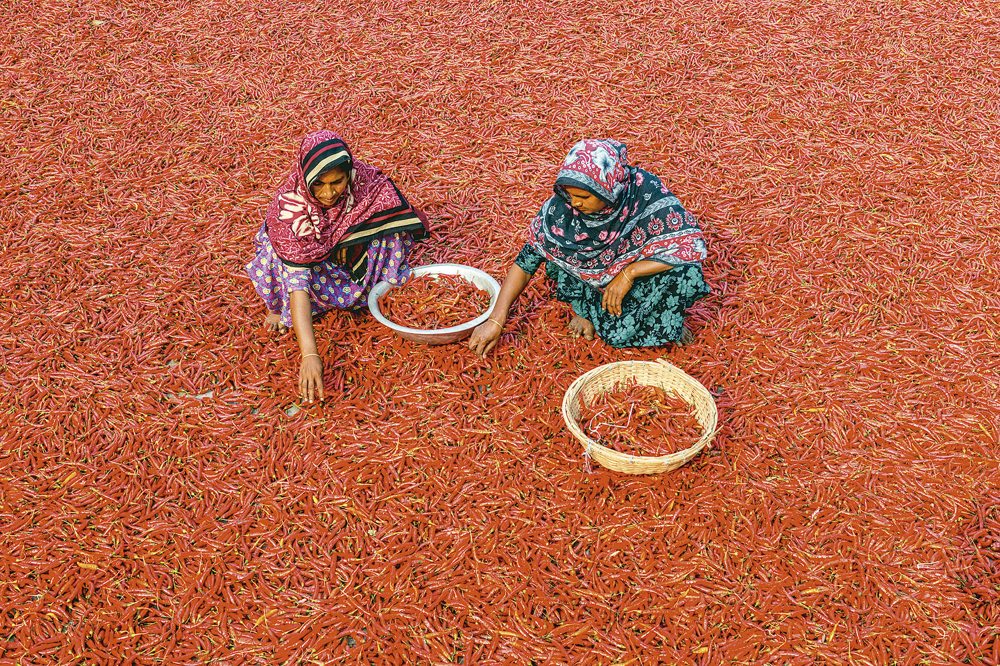
Trabalho de secagem de pimenta em Bogra, Bangladesh, 2017
Além de muito populosa, a Ásia Meridional é uma das regiões mais densamente povoadas do globo. Embora a maioria da população ainda se localize nas áreas rurais, em especial por causa da tradicional rizicultura, a
aceleração da urbanização no subcontinente é expressiva. A concentração populacional em grandes metrópoles também se destaca nessa região. Entre as mais populosas cidades da Ásia Meridional estão Karachi, no Paquistão, e as
indianas
Mumbai, a capital Nova Délhi, Calcutá e Bangalore, principal tecnopolo deste país.
rizicultura: cultivo do arroz
Essa região do continente asiático apresenta quadro econômico bastante diversificado e complexo. Bolsões de miséria e a fome ainda persistem em vastas regiões desse subcontinente; contudo, há polos urbanos altamente modernos com
alto
crescimento industrial e forte expansão da indústria de softwares e outros elementos da tecnologia informacional. A Índia, principal potência regional, por exemplo, desponta nas tendências de crescimento econômico e
populacional
que projetam o país, em futuro próximo, como a maior população do globo, bem como uma das maiores economias nacionais, como já ocorre com a China.
Sudeste da Ásia
Compreende os países da Península da Indochina (Mianmar, Tailândia, Laos, Vietnã, Camboja, Malásia e Cingapura) e os países insulares (Filipinas, Brunei, Indonésia e Timor Leste), localizados entre os oceanos Índico e Pacífico.
Trata-se de uma região densamente povoada, onde antes predominavam florestas tropicais, na atualidade com áreas bastante reduzidas por causa do avanço de atividades agrícolas e do crescimento urbano.
Ainda que a população rural siga majoritária na maior parte dos países da região, a população urbana cresce rapidamente. Entre as cidades mais populosas da região estão Jacarta, a capital da Indonésia, com cerca de 30,5 milhões de
habitantes em seu entorno, o que a torna a segunda mais populosa do globo, Manila, nas Filipinas, a 4ª. aglomeração urbana mais populosa, com 24,1 milhões de habitantes, e Bangcoc, na Tailândia, com 15 milhões de habitantes, o que a
leva à 19ª. posição entre as mais populosas do globo.
Pessoas da minoria étnica Ifugao em região montanhosa onde se pratica agricultura de jardinagem, baseada no terraceamento, em Banaue, Filipinas, 2018
A partir da década de 1970, principalmente, países da região, como Tailândia, Malásia e Cingapura (além de Taiwan, na Ásia Oriental), tiveram rápido crescimento econômico, em especial no setor industrial, motivo pelo qual passaram a
ser conhecidos como “tigres asiáticos”. Com relação à expectativa de vida, Cingapura tem a 4ª. mais alta do mundo, com cerca de 83 anos. O Laos, em compensação, situa-se na 140ª. colocação nesse item, uma vez que seus habitantes, em
média, vivem cerca de 65,8 anos.
Ásia Oriental
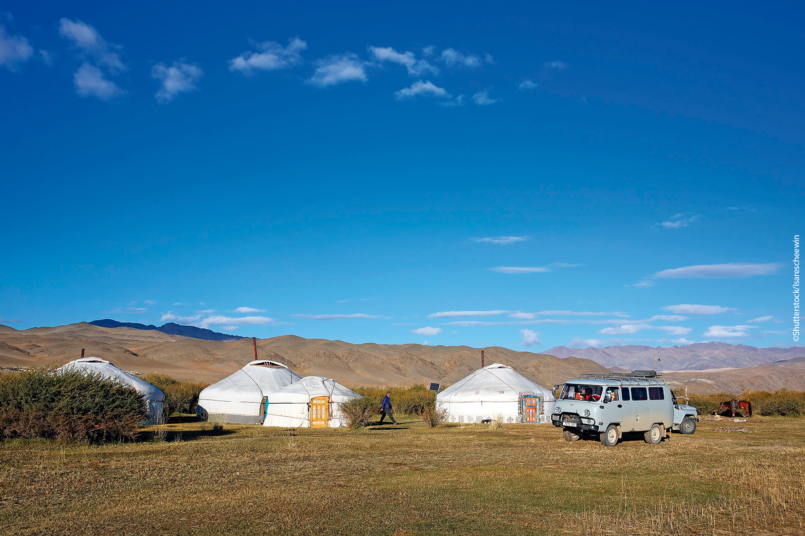
Vila com as tendas yurts, de pastores nômades, em Bayan-Ulgii, Mongólia, 2016
Também denominada Leste Asiático, essa região abrange Mongólia, China, Coreia do Norte, Coreia do Sul, Japão e a ilha de Formosa, onde se situa Taiwan – que luta pelo reconhecimento internacional de sua independência em relação à China
continental. O Extremo Oriente asiático apresenta uma das mais altas densidades demográficas do globo, algumas das mais antigas civilizações (japoneses, mongóis, chineses e coreanos) e milhares de etnias menores que se espalham pelos
países. Há, no entanto, uma irregular distribuição populacional, uma vez que a população é bem mais concentrada nas planícies, nos vales dos rios e na região costeira. O oeste da China, no Planalto do Tibete, o Deserto de Takla Makan e
a região de Sinkiang, além da Mongólia, compreendem territórios bem menos povoados
Na Mongólia, metade da população do país, ou quase 1,5 milhão de habitantes, localiza-se na capital, Ulan Bator. Ao mesmo tempo, nas estepes, pastores mongóis e suas famílias seguem o estilo de vida seminômade, preservando as
tradições
de seus ancestrais.
Das 100 mais populosas aglomerações urbanas do mundo em 2015, 23 se localizavam na China. Na Ásia Oriental se situa o mais populoso complexo urbano do mundo, a megalópole conhecida como Tokaido, que une Tóquio e Yokohama, na ilha de
Honshu, no Japão. Mas, além da megalópole de Tóquio, há outras nove nessa região que se enquadram na categoria de megacidades, ultrapassando a marca de 10 milhões de habitantes.
Yokohama, Japão, 2018
Desigualdades socioeconômicas da Ásia
Há regiões na Ásia em que as condições ambientais, climáticas ou de relevo dificultam o desenvolvimento econômico. Regiões desérticas ou, ao contrário, excessivamente alagadiças muitas vezes apresentam situação de pobreza
estrutural,
na qual se enquadram cenários de baixo desenvolvimento humano que se prolongam por muito tempo e cujas mudanças, em geral, não se vislumbram a curto prazo. Por outro lado, regiões afetadas por graves crises econômicas ou, em
situação
ainda mais extrema, por guerras têm como consequência o crescimento da pobreza conjuntural, que se caracteriza pelo caráter transitório, causado por algum evento específico (secas, guerras, terremotos). Esse tipo de pobreza tem
abalado
países relativamente prósperos na Ásia, como Síria e Iraque, que, antes das atuais fases de conflitos, figuravam entre os mais desenvolvidos da região.
Se a ajuda humanitária internacional já se faz necessária nas situações citadas, ela é ainda mais urgente quando se somam no mesmo local as duas formas de pobreza. É o que se constata, por exemplo, no Afeganistão e no Iêmen. No
primeiro caso, as guerras provocadas pelas invasões da União Soviética, entre 1979 e 1989, e dos Estados Unidos, que se estende desde 2001 até o presente, além de conflitos internos, resultaram em muita destruição material e perda
de
vidas em curto intervalo de tempo.
Iêmen: classificação quanto à questão da segurança alimentar
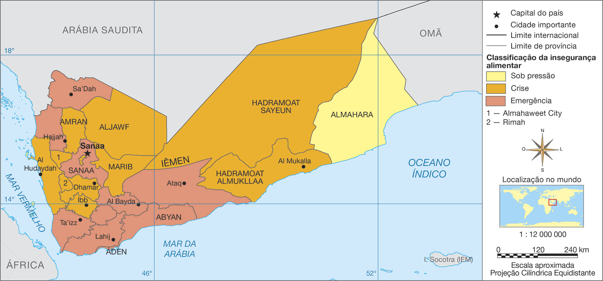
Fonte: WORLD HEALTH ORGANIZATION. Disease maps of countries affected by food insecurity and famine. Disponível em: <https:// www.who.int/emergencies/famine/Yemen-Jun-Sept-2017.png?ua=1>. Acesso em: 8 fev.
2019.
Adaptação.
Quando se considera o número de pessoas afetadas pela fome, a situação do Iêmen é a mais deplorável das últimas décadas. Estima-se que 8,4 milhões de pessoas sofrem com a fome no país e que, de acordo com dados da organização de ajuda
humanitária Save the children, 85 mil crianças com idade inferior a 5 anos morreram em consequência de desnutrição aguda entre 2015 e 2018, desde o início da guerra civil. Em quase todo o país, como é possível observar no mapa, a
situação da fome é preocupante.
Cingapura, Japão e Coreia do Sul são países asiáticos notórios pelo desenvolvimento alcançado ao longo do século XX, visível nas sofisticadas infraestruturas urbanas e de transporte, fruto de forte elevação observada nos níveis de
produtividade em suas economias. No século XXI, trajetórias similares têm sido observadas também no Vietnã e principalmente na China e perseguidas com êxito menor, mas ainda assim considerável, pela Índia.
Israel, localizado nas margens mediterrâneas do Oeste da Ásia e uma das sociedades mais desenvolvidas no continente, apresenta situação dúbia. Isso porque o país se encontra dividido entre israelenses, predominantemente judeus, e
árabes palestinos, predominantemente muçulmanos. Conforme veremos melhor mais à frente, a confinação dos últimos em territórios segregados, atitude contrária à resolução acordada internacionalmente para a região após a Segunda Guerra
Mundial, confere a eles condições socioeconômicas bem inferiores às da população judaica.
Índice de Desenvolvimento Humano (IDH)
O Índice de Desenvolvimento Humano, ou IDH, é o indicador socioeconômico mais utilizado em estudos comparativos de países e regiões do mundo, ou mesmo de diferentes áreas de um mesmo país, bem como para elaboração de projetos que visam
ao desenvolvimento regional. Os dados que resultam no valor, que varia entre 0 e 1, são pesquisados e calculados pelo Programa das Nações Unidas para o Desenvolvimento – PNUD. Três diferentes áreas são contempladas pelos critérios de
apuração do IDH: saúde, medida pela esperança de vida da população; educação, medida pelos anos de estudos que a população realiza em média; economia ou renda, medida com base na Renda Nacional Bruta per capita do país ou da
região analisados.
É necessário levar em conta que os valores resultantes do IDH apresentam uma média da realidade socioeconômica do país, ocultando índices dos estratos sociais superiores e inferiores da população. Ainda assim, ao tratar de
componentes que permitem qualificar a saúde, a educação e a renda médias da população, os valores medidos possibilitam tanto comparar o desenvolvimento de uma sociedade quanto traçar metas por parte dos respectivos governos, almejando
avanços.
Visitantes realizam leitura em biblioteca em Seul, capital sul-coreana, 2017
Com a qualidade de vida intensamente prejudicada por guerras prolongadas e falta de investimentos, os mais baixos Índices de Desenvolvimento Humano entre os países asiáticos correspondem a Afeganistão, Síria e Iêmen, todos países
conflagrados em guerras civis e invadidos por forças estrangeiras. Por outro lado, em uma análise de cada critério adotado pelo PNUD para obtenção do índice, destacam-se positivamente:
saúde – Hong Kong, na China, e Japão, que apresentam expectativas de vida da população estimadas respectivamente em 84,1 e 83,9 anos.
educação – Coreia do Sul, com a perspectiva de 16,5 anos de escolaridade para os que estão iniciando a vida escolar e média atual de 12,1 anos de escolaridade, e Israel, com índices de 15,9 e 13,0
respectivamente.
renda – Catar, com Renda Nacional Bruta per capita anual de 116.818 dólares, seguido de Cingapura, com 82.503 dólares para o mesmo índice.
Entre os países que apresentaram o maior avanço entre o ranking divulgado em 2014 e o de 2018, há o caso da China, que foi da 101ª. posição, com índice de 0,699, para a 86ª. colocação e índice de 0,752. A maior queda, por sua vez, por
motivos já tratados, coube à Síria, que, em 2014, ocupava a 116ª. posição (0,648) e, no último ranking, ocupou a 155ª. posição, com 0,536.
Coeficiente de Gini
O coeficiente de Gini é um índice criado em 1912 pelo matemático italiano Conrado Gini com o intuito de avaliar a diferença entre as maiores e as menores rendas obtidas pela população de determinado país. Diferentemente do que
ocorre
com os valores do IDH, quanto maior o valor alcançado, pior é o retrato do Estado nesse quesito, pois mais desigual é a distribuição de renda entre seus habitantes. No coeficiente de Gini, um valor zero representa a igualdade
absoluta,
como se todas as pessoas do país considerado obtivessem exatamente a mesma renda, enquanto 100 representa a desigualdade absoluta, ou seja, como se apenas uma pessoa concentrasse absolutamente toda a renda. São ambas situações
hipotéticas, que servem apenas de parâmetros para avaliar a realidade.
A média mundial do coeficiente ou índice de Gini, conforme estimativa de 2012, era 37,9.
Ásia: coeficiente de Gini (2010-2016*)
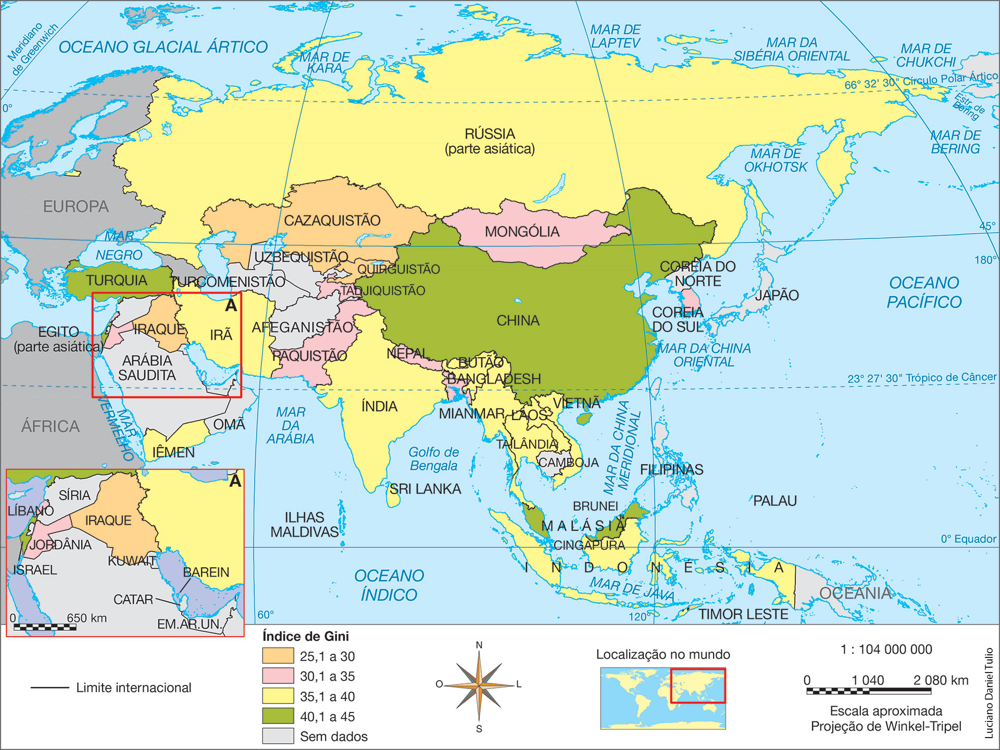
*Nem todos os países têm dados apurados e alguns os apresentam apenas para anos específicos
Fonte: THE WORLD BANK. Gini index (World Bank estimate). Disponível em: <https://data.worldbank.org/indicator/SI.POV.GINI?end=2017&start= 2017&view=bar>. Acesso em: 11 fev. 2019. Adaptação.
Entre os países asiáticos em que se tem realizado tal pesquisa de dados, os que apresentam os melhores coeficientes de Gini são: Quirguistão = 26,8 (2016), Cazaquistão = 26,9 (2015); Timor Leste = 28,7 (2014) e Iraque = 29,5
(2012).
Na
outra ponta, os países com os piores coeficientes de Gini são: China = 42,2 (2012); Turquia = 41,9 (2016), Israel = 41,4 (2012) e Malásia = 41 (2015).
Cartografar
Consulte o ranking do IDH dos países asiáticos, divulgado pelo Programa das Nações Unidas para o Desenvolvimento (PNUD) em 2018, presente na página 1 do seu material de apoio, e preencha o mapa
político da
Ásia e a tabela abaixo de acordo com estas instruções:
a) Identifique os seis países asiáticos com IDH mais elevado e pinte seus territórios de verde.
b) Identifique os seis países asiáticos com IDH mais baixo e pinte seus territórios de amarelo.
MAIS ALTOS IDH NA ÁSIA – 2018 (PNUD)
País
Posição mundial
Índice
Hong Kong*
7º
0,933
Cingapura
9º
0,932
Japão
19º
0,909
Israel
22º
0,903
Coreia do Sul
23º
0,903
Emirados Árabes Unidos
34º
0,863
MAIS BAIXOS IDH NA ÁSIA – 2018 (PNUD)
País
Posição mundial
Índice
Iêmen
178º
0,452
Afeganistão
168º
0,498
Síria
155º
0,536
Paquistão
150º
0,562
Nepal
149º
0,574
Mianmar
148º
0,578
*O Programa das Nações Unidas para o Desenvolvimento calcula os índices de Hong Kong separados dos dados das demais regiões da China.
Ásia: países com maiores e menores IDH
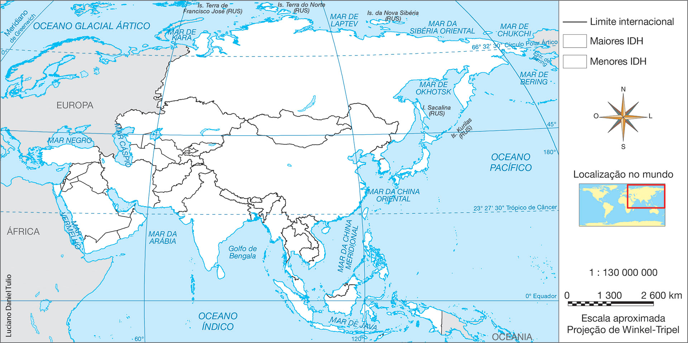
Fonte: IBGE. Atlas geográfico escolar. 7. ed. Rio de Janeiro, 2016. Adaptação
Diversidade étnica no maior dos continentes
Uma das ideias que mais se associam à Ásia quando se faz referência a seu espaço geográfico é a coexistência de elementos tradicionais de antigos povos com outros de linhas modernas, arrojadas e dotadas de tecnologia de ponta.
Coreia do Sul, Japão e, mais recentemente, China apresentam vários exemplos dessas paisagens que mesclam elementos de tempos distintos, contrapondo tradição e modernidade no mesmo cenário. Essas sociedades, ao mesmo tempo que se
mostram orgulhosas do passado, preocupam-se com as tendências do presente, como novas tecnologias e modas culturais.
Por mais de mil anos, antes de Tóquio se tornar a capital japonesa, a cidade imperial de Kyoto é que detinha essa condição. Centenas de templos, castelos, jardins zen, bairros antigos com casas de madeira com dois ou mais andares
se
conservam próximos ao conjunto de infraestruturas de uma moderna e agitada metrópole.
Templo Kiyomizu-dera, em Kyoto, Japão, 2018
Seul, há poucos anos, tornou-se mais uma das megacidades asiáticas, o que significa que abriga mais de 10 milhões de habitantes. Circular por suas ruas é fazer uma viagem pelo tempo: antigos templos budistas dividem o espaço urbano com
arranha-céus de arquitetura de tempos modernos, impulsionados pelo crescimento da economia.
Uma transformação espacial que se tornou motivo de orgulho dos sul-coreanos foi a revitalização do Rio Cheonggyecheon. Seiscentas mil toneladas de concreto e asfalto que cobriam o rio foram removidas, suas águas foram despoluídas e
as margens se tornaram contínuos espaços de lazer da população de Seul.
Vila Bukchon Hanok, em Seul, Coreia do Sul, 2018
A seguir, serão estudados as etnias ou os povos de maior visibilidade internacional na Ásia, entre aqueles tradicionalmente associados às paisagens do continente.
Povos minoritários ou minorias étnicas
Com mais de 4,5 bilhões de pessoas, a população asiática se divide em milhares de etnias, que se espalham por mais de 40 países. Algumas delas são representativas de cada região do continente ou se destacam pelo tamanho da população,
pela luta por maior autonomia e representatividade política ou mesmo pela preservação das tradições. As características naturais e paisagísticas contribuem para explicar o modo de vida e as formas de subsistência das populações,
principalmente as mais antigas.
Essas etnias, nativas do continente, são minorias em um ou em mais de um Estado, por isso são denominadas povos minoritários ou minorias étnicas. Algumas delas, inclusive, sofrem processos de exclusão ou perseguição política, o que
causa migrações forçadas para países vizinhos, e frequentemente se organizam em movimentos por autonomia política ou independência dos Estados onde estão abrigadas. Vejamos alguns desses povos de modo mais detalhado a seguir.
Povos das estepes e da taiga
Historicamente, grupos humanos nas estepes semidesérticas da Ásia Central são hábeis como pastores e cavaleiros, enquanto mais ao norte, na taiga, a vasta floresta de coníferas da Sibéria foi ocupada, de modo mais esparso, por povos
caçadores.
Migrações de populações das estepes centro-asiáticas na direção oeste, ocorridas há 5 mil anos, contribuíram para o povoamento e a composição étnica de populações europeias, principalmente na Europa Oriental. Mongóis, cazaques e turcos
trazem heranças étnicas e culturais dessas populações campestres da Ásia. São povos com origem na região dos mares Cáspio e Negro e dos vales do Cáucaso e do Pamir, por onde passava a famosa rota da seda, conjunto de vias comerciais que
ligavam o Extremo Oriente à Europa e ao leste da África durante a Antiguidade.
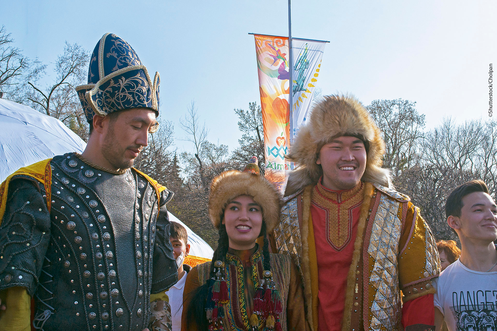
Pessoas com trajes típicos no Festival de Nauryz (celebração do ano-novo, no equinócio de primavera) em Almaty, Cazaquistão, 2016
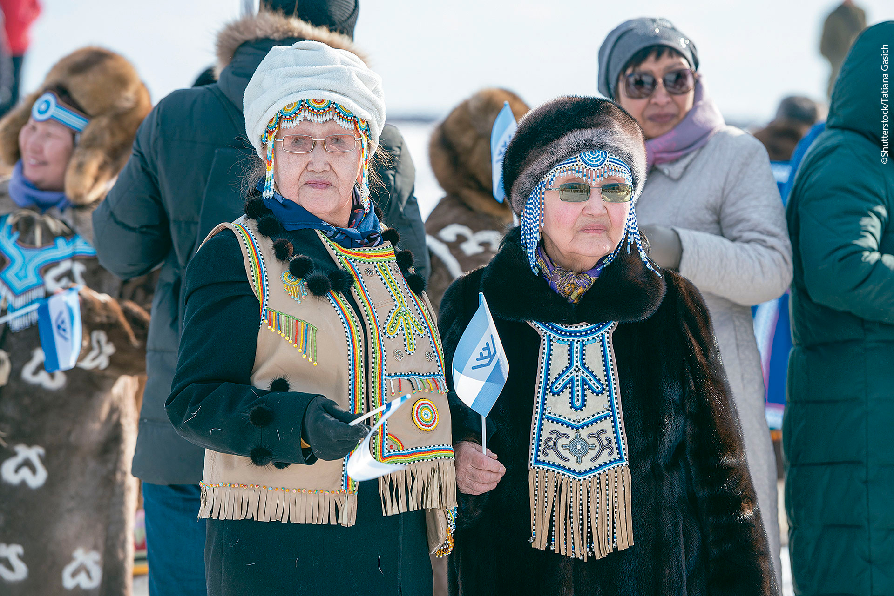
Mulheres de origem Iacuta em festival em Iakutsk, Rússia, 2015
Há cerca de três décadas, mais de dois terços dos povos da taiga siberiana eram nômades ou seminômades, mesclando criação de renas, coleta de alimentos e caça de animais diversos. Atualmente, por volta de 10% da população dos Sakha (ou
Iacutos) e dos Komi, os mais numerosos entre os siberianos, sobrevivem dessas práticas e a maior parte habita aldeias e pequenas cidades.
Rohingyas
Nos últimos anos, os rohingyas têm chamado a atenção do mundo por conta do intenso e prolongado processo de perseguição que vêm sofrendo em Mianmar, em especial em 2017 e 2018. Trata-se de uma população de religião
predominantemente
muçulmana, mas que vive em um país de maioria religiosa budista. Além disso, o nacionalismo tem crescido em Mianmar, o que não favorece as minorias religiosas com cultura e idioma próprios, como os rohingyas.
Embora o país reconheça 135 minorias étnicas, os rohingyas não são considerados cidadãos, mas imigrantes clandestinos, embora vivam lá há décadas, com gerações inteiras nascidas no território. Dessa forma, constituem uma grande
população de apátridas. Por isso, ainda hoje enfrentam muitas dificuldades para ter acesso a serviços públicos básicos, como saúde, segurança e educação, e superar a condição de pobreza em que vivem.
Refugiados rohingyas em Teknaf, Bangladesh, 2017
Em 2017, os rohingyas eram estimados em cerca de um milhão de habitantes, entre os 53 milhões da população total de Mianmar. Entretanto, ao fim de 2018, após mais de 10 mil rohingyas serem mortos pelo exército e por milícias
mianmarenses, mais de 700 mil migraram à força para campos de refugiados em Bangladesh. Por conta dessa situação, a imagem internacional do país foi fortemente abalada, assim como a de sua líder, Aung San Suu Kyi. Apesar de ganhar o
Prêmio Nobel da Paz em 2005 por sua luta pela democracia em Mianmar, Aung foi bastante criticada por sua omissão diante das perseguições aos rohingyas, consideradas um genocídio pela ONU.
nacionalismo: doutrina que visa à afirmação nacional nos planos político, econômico e cultural. Fonte: SANDRONI, Paulo. Dicionário de economia do século XXI. 3. ed. Rio de Janeiro: Record, 2008.
apátridas: pessoas que são destituídas de qualquer nacionalidade, não sendo consideradas cidadãs de país algum, o que acarreta também na ausência de direitos garantidos.
enocídio: ação de extermínio de determinado grupo por razões de religião, etnia, nacionalidade e outras.
Curdos
Com características culturais seminômades e organização baseada em clãs, os curdos são considerados a maior nação sem Estado ou minoritária do mundo. Sua população, estimada entre 30 e 40 milhões de pessoas, encontra-se historicamente
distribuída entre os territórios de Turquia, Síria, Iraque, Irã, Armênia e Azerbaijão. Sua origem é pouco conhecida, mas estudos apontam para o noroeste do atual Irã. A própria língua curda deriva da antiga língua persa, idioma oficial
do Irã.
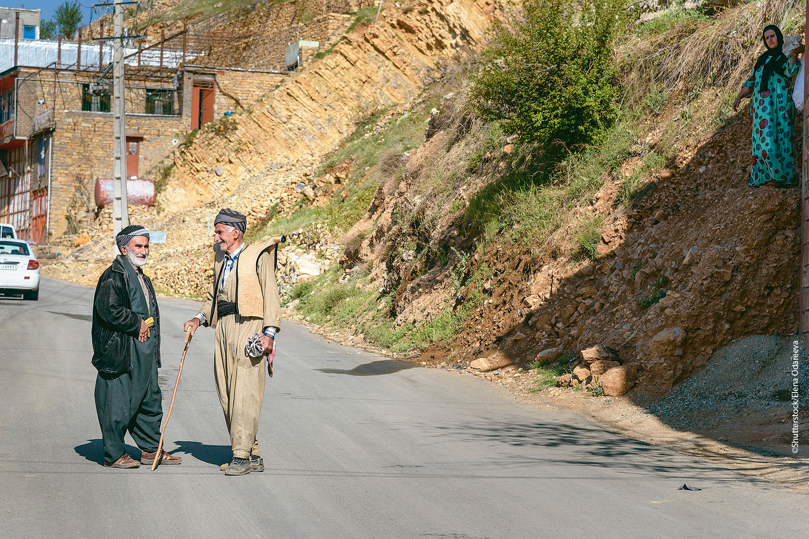
Curdos em Hawraman, área habitada por esse povo no Irã, 2018
A população curda não é homogênea; há diversos grupos políticos que a representam nos diferentes países onde ela se encontra. Em alguns casos, como o do Partido dos Trabalhadores do Curdistão (PKK), na Turquia, pesam acusações
ligadas
ao terrorismo. Dessa forma, os curdos acabam sendo combatidos pelo governo turco, receoso quanto ao desejo de emancipação da etnia que ocupa grande parte do seu território.
Nos casos do Iraque e da Síria, os grupos curdos se organizaram em milícias e guerrilhas aliadas dos Estados Unidos para enfrentar as forças de grupos terroristas como o Estado Islâmico (EI), que, entre 2014 e 2017, dominou boa
parte
desses países. A participação dos curdos foi de grande relevância para a expulsão do EI e, dessa maneira, conseguiram apoio dos Estados Unidos para ter maior autonomia em seus territórios. A aliança, contudo, não implica apoio
para
lutas de independência nacional.
Palestinos
Os palestinos são árabes de maioria muçulmana, mas com importante minoria cristã ortodoxa, que vivem em Israel, um país judaico. Essa condição é causa de muitas controvérsias e também fruto delas. No território israelense, há
áreas
consideradas sagradas para seguidores de três importantes religiões: judaísmo, islamismo e cristianismo. A cidade de Jerusalém, por exemplo, é simbólica para cada uma dessas religiões.
Desde o fim da Primeira Guerra Mundial (1914-1919), a região denominada historicamente de Palestina, que correspondia a quase todo o território ocupado na atualidade por Israel, encontrava-se sob administração do Reino Unido.
Em 1947, a recém-criada ONU aprovou um plano de partilha da região da Palestina em dois Estados. Um deles seria destinado aos árabes com o nome de Palestina, correspondendo a cerca de 43% da área total, e envolveria a
Cisjordânia, a
Faixa de Gaza e outras porções. O outro, com o nome de Israel, seria destinado aos judeus, com aproximadamente 57% da área total.
Em 1948, logo após a retirada do Reino Unido da Palestina, a Agência Judaica aí proclamou o Estado de Israel.
O Estado Judeu foi estabelecido (Israel), mas o Estado Palestino não. Por conta dos muitos confrontos ocorridos desde a fundação, seja com países árabes da vizinhança, seja com grupos palestinos como o Hamas, Israel ocupou as
áreas previstas para o Estado Palestino e as mantém sob ocupação.
Jerusalém, Israel, 2018
Confira nos mapas da página 2 do material de apoio que a proposta de partilha dos Estados Palestino e Israelense elaborada pela ONU em 1947 já trazia o território árabe (Palestina) segmentado. No extremo norte do
atual
Estado de Israel, na divisa com o Líbano e proximidades da fronteira com a Síria, está a região denominada Colinas de Golã. Ao final da Guerra dos Seis Dias, em 1967, Israel incorporou esse território e o mantém até hoje. Ele é
considerado de estratégica importância econômica, uma vez que abriga as nascentes do Rio Jordão, o único com plenas condições de abastecer a agricultura irrigada de seu árido território. Também houve significativa redução da área
da
Cisjordânia e da Faixa de Gaza, territórios inicialmente destinados aos palestinos, além da Península do Sinai que, contudo, foi devolvida ao Egito no ano de 1982, em troca do reconhecimento diplomático de Israel por parte do país
árabe.
Nas décadas seguintes, a instalação de colônias judaicas no interior desses territórios, em princípio reservados à Palestina, explicita o domínio israelense sobre eles.
Coreias: um povo e dois Estados
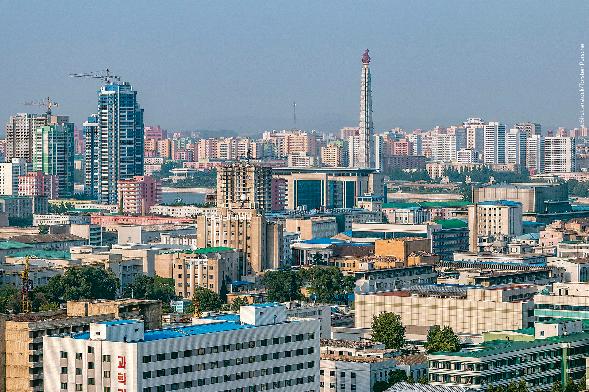
Pyongyang, capital da Coreia do Norte, 2018
Os coreanos formam um povo de origem milenar, que remonta à junção de três reinos no século X. Ocupando uma península relativamente estreita no extremo oriente asiático e tendo como vizinhos nações maiores e mais fortes
militarmente,
sofreu diversas invasões ao longo da história, em especial de mongóis, chineses e japoneses. O Japão invadiu e ocupou a península de 1910 até o fim da Segunda Guerra Mundial (1945), quando os soviéticos ocuparam o norte dela, e os
estadunidenses, o sul.
Como um dos resquícios mais duradouros do período da Guerra Fria, o povo coreano segue ainda hoje dividido em dois Estados: Coreia do Norte, socialista e formada sob influência soviética, e Coreia do Sul, capitalista e formada
sob
influência estadunidense. Essa divisão se deu em 1948 e se consolidou em 1953, com o armistício assinado ao final da Guerra da Coreia (1950-1953). Na ausência de um tratado de paz, essa situação se estende até os dias atuais, de
modo
que a guerra ainda não foi, oficialmente, encerrada. Embora os países tenham pacificado de forma considerável as relações entre si, continuam tecnicamente em guerra.
Presidente da Coreia do Sul, Moon Jae-in (à esquerda), e da Coreia do Norte, Kim Jong-un (à direita), durante encontro em 2018
Após tensões decorrentes de exibições de testes com mísseis por parte da Coreia do Norte e de hostilidades diplomáticas entre as lideranças da Coreia do Norte e dos Estados Unidos, em 2018 foi realizada uma jornada de
conversações
entre os governantes da Coreia do Norte (Kim Jong-un) e da Coreia do Sul (Moon Jae-in).
Organize as ideias
Situe no mapa a seguir, de forma aproximada, as regiões habitadas pelas seguintes nações destacadas no capítulo: rohingyas, curdos, palestinos e coreanos. Para
tanto,
preencha a legenda do mapa e escolha um título para ele. Em seguida, descreva brevemente a situação atual dessas nações.
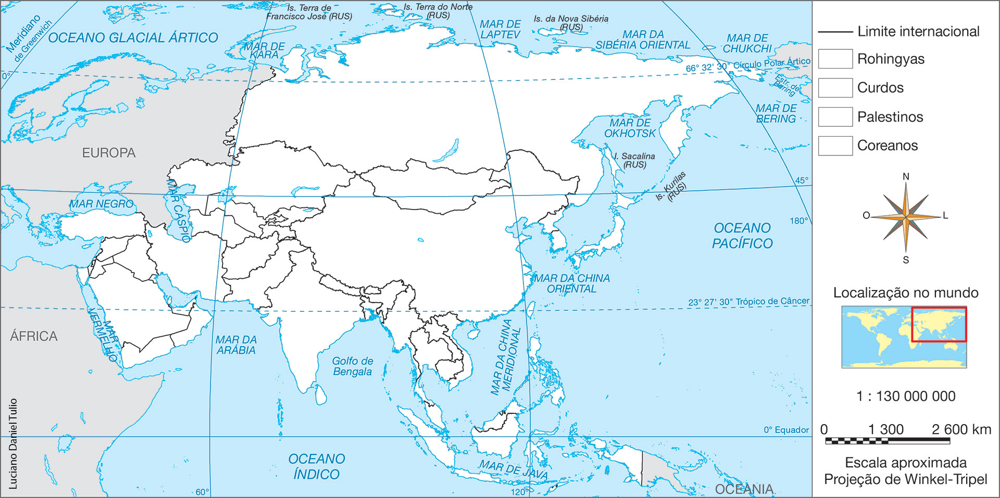
Fonte: IBGE. Atlas geográfico escolar. 7. ed. Rio de Janeiro, 2016. Adaptação
a) Rohingyas:
b) Curdos:
c) Palestinos:
d) Coreanos:
China e Índia: gigantes e multiétnicas
China e Índia, os dois países mais populosos do mundo, com seus extensos territórios, apresentam grande diversidade étnica, bem como uma variedade de línguas e religiões. Ambas as sociedades são herdeiras de duas das mais antigas
culturas do mundo, cujas civilizações se constituíram há cerca de 4,5 mil anos.
No decorrer de muitos séculos, o mosaico de povos que se estabeleceram nesses territórios permitiu o desenvolvimento de uma pluralidade de culturas, bem como de intenso sincretismo cultural.
O sincretismo cultural é a fusão de diferentes conjuntos de ritos, doutrinas ou dogmas, compondo uma nova religião, filosofia ou cultura.
Tais países se sobressaem no cenário político-econômico mundial de forma expressiva. Leia a seguir a projeção feita para eles por um cientista político brasileiro em fevereiro de 2018, no jornal Folha de S.Paulo.
Conexões
A ascensão da “Chíndia”
China e Índia entram em nova fase de adaptação criativa e miram Sudeste Asiático
Marcos Troyjo, 21 fev. 2018
[...] Basta visitar os principais hubs industriais e tecnológicos desses dois países, como Shenzhen e Bangalore, para perceber como a ‘Chíndia’, termo cunhado pelo parlamentar indiano Jairam Ramesh para designar o eixo mais
pujante dos mercados emergentes na Ásia, entrou numa nova fase de adaptação criativa.
Para a China, a primeira fase de adaptação criativa significou a reorganização da sua capacidade produtiva para que o país pudesse se tornar líder em exportações. Fomentou ademais parcerias público-privadas que disponibilizaram o
capital necessário à expansão da sua infraestrutura. Controlou salários, taxas de câmbio e fatores de produção para turbinar sua alta competitividade.
Na Índia, a adaptação criativa foi materializada, nos últimos 25 anos, pela provisão de alternativas mais baratas em áreas como tecnologia da informação, farmacêuticos e têxteis. Bangalore, o hub de tecnologias da
informação, floresceu graças a essa política e virou o berço de grandes conglomerados da indústria digital indiana [...].
Há crescentemente na ‘Chíndia’ a noção de que os mercados tradicionais dos Estados Unidos e da Europa estão em recuperação, mas que de fato o eixo geoeconômico do mundo está localizado no Sudeste Asiático.
Assim, a ‘Chíndia’ está se voltando cada vez mais à sua própria região. A China implementa medidas voltadas ao desenvolvimento de cadeia de fornecedores nos mais diferentes setores em países como Vietnã, Tailândia, Mianmar e na
própria Índia.
Se um fabricante de aeronaves pretende vender seu produto para o cliente mais importante da China, que é o governo chinês, há que produzir, essencialmente, 70% dos componentes dos aviões na China, gerando, portanto, impostos e
empregos no país.
A China tem capacidade de investimento e, para além de seu banco de desenvolvimento – o maior do mundo –, conta com novas instituições lideradas por Pequim que apenas fortalece o campo magnético de sua influência e poder econômico.
Tudo isso ajuda na transformação do modelo econômico de uma ênfase orientada a exportações para maior atenção ao mercado interno ou mesmo ao crescimento turbinado pela criação de projetos estruturantes na Ásia-Pacífico.
[...]
Na Índia, temos uma situação muito desigual. Quando se trata de tecnologia da informação, biotecnologia e farmacêutica, os avanços são grandes porque contam com um grande aporte de investimentos do setor privado. As empresas
multinacionais fazem suas pesquisas na Índia por causa do custo relativamente baixo de produção e do alto nível de capital intelectual humano lá existente. Hoje, na Índia, há mais telefones celulares do que banheiros. Há mais
bilionários do que no Reino Unido e na França juntos.
Mas é também um país em que há pessoas mais pobres do que em todo o continente africano. Para a Índia fazer frente aos novos desafios, sua principal tarefa é a simplificação das práticas negociais e a paralela diminuição da
burocracia. Além de tamanho, em ambos os casos, o continuado sucesso da ‘Chíndia’ dependerá essencialmente de velocidade empresarial.
Nesse aspecto, ainda que a Índia tenha crescido percentualmente mais do que a China nos últimos dois anos, o ritmo e sintonia de adaptação chinesa aos novos tempos é bastante maior.
TROYJO, Marcos. A ascensão da “Chíndia”. Disponível em: <https: //www1.folha.uol.com.br/colunas/marcostroyjo/2018/02/a-ascensao-da-chindia.shtml>. Acesso em: 27 fev. 2019.
Na Índia, as características próprias de cada estado e território se manifestam tanto no meio físico, em que savanas semiáridas e florestas úmidas se avizinham, quanto na história e na tradição de seus povos. Arquiteturas,
gastronomias, trajes e idiomas diversificam e valorizam o cenário cultural indiano.
Festival Durga Puja, em Kolkata, Índia, 2010
Embora o hinduísmo tenha cerca de 80% de seguidores na Índia, muitas outras religiões se distribuem pelo território indiano. São exemplos o islamismo (cerca de 15% de fiéis), o cristianismo e o sikhismo (cada qual com cerca de 2% de
seguidores).
Uma minoria da população não segue nenhuma dessas religiões. As centenas de povos tribais, por exemplo, têm seus próprios credos. Apesar de serem bastante afetados pelas rápidas transformações que acontecem no espaço indiano, como as
que decorrem da urbanização e da redução das florestas, muitos de seus membros são fiéis aos costumes, que se diferem dos vizinhos. Parte dos chenchus, uma das populações tribais do sul da Índia, ainda hoje depende totalmente da
floresta para seu sustento, vivendo da caça e da coleta.
Registros das primeiras civilizações do território na atualidade pertencente à China, tal como na Índia, datam de dezenas de séculos. Ao longo de sua rica e complexa história, os povos chineses contribuíram com grandes invenções ou
inovações que foram muito importantes para o desenvolvimento das sociedades contemporâneas, como o papel, a pólvora e a bússola.
A China foi governada por diversas dinastias e passou por muitas transformações na dimensão e na configuração de seu território. Um exemplo dessas alterações é a famosa Muralha da China, construída ao longo de 2 mil anos por
diferentes dinastias da época da China Imperial. Ela servia de barreira para impedir invasões de outros povos vindos do norte. Atualmente, restam apenas alguns trechos da grande muralha. No entanto, estimativas mais recentes indicam
que ela, em toda a sua extensão e fragmentos, totalizou cerca de 20 mil km.
Muralha da China, em localidade situada a cerca de 100 km ao norte de Pequim, capital do país, 2018
A submissão de vários povos para garantir a unificação da China em seu extenso território não é apenas estratégia do passado remoto da China, como é o caso das lutas pela autonomia de Sinkiang, onde a maioria uigur segue a fé islâmica,
e do Tibete, de maioria budista.
Hora de estudo
1. Iêmen, Afeganistão e Síria estão entre os países asiáticos com mais baixo desenvolvimento socioeconômico. Explique brevemente a causa principal dessa precária situação social e econômica.
2. A diversidade cultural dessa região da Ásia pode ser explicada pelo intenso e prolongado trânsito de caravanas e exércitos entre o litoral do Pacífico, no Extremo Oriente, e a Europa, em grande parte realizado sobre estepes em
planaltos. De que região se trata? Cite os países nela situados.
3. Cite duas razões para a grande diversidade de etnias e de línguas faladas na China e na Índia.
4. O Sudeste Asiático se caracteriza fisicamente como uma região peninsular e outra insular.
a) Qual a diferença física entre essas duas subdivisões do Sudeste Asiático?
b) O Sudeste Asiático, composto de grande diversidade étnica e culturas milenares, vem recebendo um número de turistas internacionais cada vez maior. Cite três países do Sudeste Asiático que se destacam pelo número de turistas
que
recebem.
5. Entre as nações desprovidas de Estados próprios estão os curdos. Quem são eles e onde se localizam?
6. Jerusalém é cidade sagrada para três religiões, o que lhe atribui importância ainda maior e uma situação estratégica na geopolítica do Oriente Médio.
Onde se localiza Jerusalém e quais são as religiões que têm templos e locais sagrados nessa cidade?